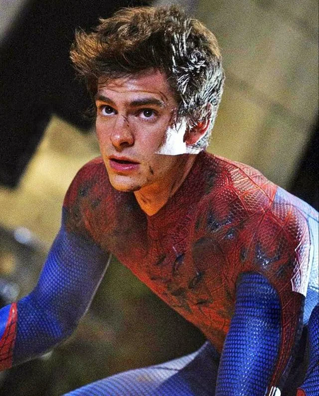

"Com grandes poderes vêm grandes responsabilidades."

Após ser picado por uma aranha geneticamente modificada nos laboratórios da Oscorp, o jovem cientista Peter Parker adquire habilidades extraordinárias. Marcado pela trágica perda de seu tio Ben, ele decide usar seus poderes para proteger as ruas de Nova York contra ameaças letais, conciliando a vida de um herói incompreendido com os dilemas emocionais da juventude.